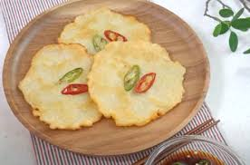

안녕하세요!
이곳은 다양한 요리 레시피를 공유하는 공간입니다. 누구나 쉽게 따라 할 수 있는 간단한 요리부터 특별한 날을 위한 메뉴까지 준비했습니다
추천 레시피
감자전
재료: 감자 3개, 전분가루 2큰술, 소금 약간, 식용유
조리법:
1. 감자를 강판에 갈아 물기를 살짝 제거합니다.
2. 전분가루와 소금을 넣어 잘 섞어줍니다.
3. 팬에 식용유를 두르고 감자 반죽을 한 숟가락씩 떠서 부칩니다.
4. 앞뒤로 노릇하게 구워내면 완성!
5. 기호에 따라 간장 양념장을 곁들여 드세요.

크림 파스타
재료: 스파게티 면 200g, 생크림 1컵, 다진 마늘 1큰술, 양파 반개, 파마산 치즈, 소금, 후추
조리법:
1. 스파게티 면을 소금물에 삶아 준비합니다.
2. 팬에 다진 마늘과 양파를 넣고 볶습니다.
3. 생크림을 넣고 약불에서 끓인 후 소금과 후추로 간을 합니다.
4. 삶아 둔 면을 소스에 넣고 잘 섞어줍니다.
5. 접시에 담고 파마산 치즈를 뿌려 완성!
초콜릿 케이크
재료: 다크 초콜릿 200g, 버터 100g, 설탕 150g, 달걀 3개, 밀가루 100g, 코코아 파우더
조리법:
1. 초콜릿과 버터를 중탕으로 녹입니다.
2. 설탕과 달걀을 휘핑해 크림화한 뒤 초콜릿을 섞습니다.
3. 밀가루와 코코아 파우더를 체에 쳐서 반죽에 넣고 잘 섞어줍니다.
4. 180도로 예열된 오븐에서 25~30분간 구워냅니다.
5. 완성된 케이크 위에 슈가 파우더를 뿌리거나 과일로 장식하세요.
문의사항은 아래로 연락부탁드립니다!
연락처: 010-1234-5678